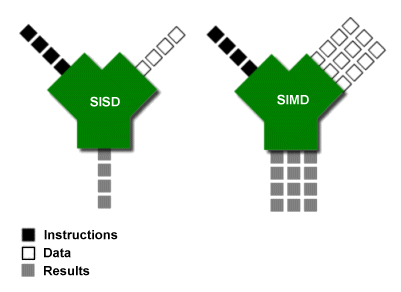

理解微处理器¶
本文更新于 2018.10.22
参考: http://archive.arstechnica.com/paedia/c/cpu/part-1/cpu1-1.html
by Jon “Hannibal” Stokes
Introduction¶
I’ve been writing on CPU technology here at Ars for almost five years now, and during that time I’ve done my best to communicate computing concepts in as plain and accessible a manner as possible while still retaining some level of technical sophistication. Without exception, though, all of my CPU articles have been oriented towards the investigation of technologies currently on the market; I’ve written no general introduction to any of the concepts that I’ve used in these investigations, opting instead to integrate some introductory material into the more advanced discussions as space allows. As a result, I always get feedback from people who express regret that there were portions of my articles that they didn’t understand due to their lack of background in the material. This is unfortunate, and for some time I’ve considered doing a more generalized introduction to the basic concepts in computing. Events have recently conspired to afford me that opportunity, hence the present article, which is the first in a series on the basics of microprocessor technology.
There are a number of good reasons to do an article like this, now. One reason, as I’ve suggested above, is to provide readers with a better background for understanding my previous work. After reading this article you should be able to go back and revisit some older articles that you only half digested and get more out of them. But the main reason for doing a general introduction to microprocessor technology is forward-looking: that there are a number of new processors slated to come out in the next year and this article will help to lay the groundwork for my coverage of those designs. Itanium2, Yamhill, the PPC 970, AMD’s Hammer, and even the Playstation3 are all on the horizon, and we at Ars want to be proactive about helping you get ready to understand what makes all of those technologies tick.
Due to the continuing success of the Ars RAM Guide , I’ve chosen to model the present series on it. I’ll start out at a very basic level with this first article, and as the series progresses I’ll advance along the axes of chronology and complexity from older, more primitive technologies to newer, more advanced ones. The one important difference between this article and the RAM guide is in this article’s relative lack of real-world examples. There are a number of reasons why I’ve chosen to forego detailed discussions of present-day implementations, but the primary one is that such discussions constitute almost every CPU article I’ve written. If you’re looking for real-world examples, then you should start with the articles listed, here .
Code and Data: a closer look¶
Judging by the steady stream of feedback I’ve gotten on it over the years, the following, which was part of my article on SIMD , has proven to be one of the most popular diagrams I’ve ever made. (It’s my vain suspicion that it had some influence on the Intel hyper-threading ads that previously adorned certain pages here at Ars.) This being the case, I want to develop our general discussion of the types of tasks computers do by first presenting this simple conceptual diagram and then elaborating on it and nuancing it until a more complete picture of the microprocessor emerges.
The above diagram is a variation on the traditional way of representing a processor’s arithmetic logic unit (ALU), which is the part of the processor that does the actual addition, subtraction, etc. of numbers. However, instead of showing two operands entering the top ports and a result exiting the bottom (as is the custom in the literature) I’ve depicted a code stream and a data stream entering and a results stream leaving. For the purposes of our initial discussion, we can generalize by saying that the code stream is made up of different types of operations and the data stream consists of the data on which those operations operate. To illustrate this point and to put a more concrete face on the diagram above, imagine that one of those little black boxes is an addition operator (a “+” sign) and two of the white boxes contain the two integers to be added.
The kind of simple arithmetic operation pictured above represents the sort of thing that we intuitively think computers do: like a pocket calculator, the computer takes numbers and arithmetic operators (like +, -, /, >, <, etc.) as input, performs the requested operation, and then spits out the results. These results might be in the form of pixel values that make up a rendered scene in a computer game, or they might be entries in a spreadsheet.
meet the “file clerk”¶
This “calculator” model of computing, while appropriate in many respects, isn’t the only or even the best way to think about what computers do. As an alternative, consider the following definition of a computer:
A computer is a device that shuffles numbers around from place to place, reading,
writing, erasing, and rewriting different numbers in different locations according to
* a set of inputs,
* a fixed set of rules for processing those inputs,
* and the prior history of all the inputs that the computer has seen since it
was last reset,
until a predefined set of criteria are met which cause the computer to halt.
We might, after Richard Feynman(费曼), call this idea of a computer as a reader, writer, and shuffler of numbers the “file clerk”(档案管理者) model of computing (as opposed to the aforementioned calculator model). In the file clerk model, the computer accesses a large (theoretically infinite) store of numbers, arranged sequentially, for the purpose of altering that store to achieve a desired result. Once this desired result is achieved, the computer “halts” so that the now modified store of numbers can be read and interpreted by humans.
The file clerk model of computing might not initially strike you as all that useful, but as this article progresses you’ll begin to understand how important it is. Just to give you a general sense of its relevance here at the outset, I’ll point out that the power of this way of looking at computers lies in the fact that it emphasizes the end product of computation, and not the computation itself. After all, the purpose of computers isn’t to just “compute” in the abstract, but to produce usable results from a given data set. In other words, what matters in computing applications is not that you did some math, but that you started with a body of numbers, applied a sequence of operations to it, and got a list of results. Those results could, again, represent pixel values for a rendered scene or an environmental snapshot in a weather simulation. Indeed, the idea that a computer is a device that transforms one set of numbers into another should be intuitively(直观地) obvious to anyone who’s ever used a Photoshop filter.
Once we understand computers not in terms of the math they do, but in terms of the numbers they move and modify, we can begin to get a fuller picture of how they operate.
(Those of you who’ve studied computer science will recognize in the above the beginnings of a discussion of a Turing machine. The Turing machine is, however, too abstract for our purposes here, so I won’t actually describe one. The description that I develop here sticks closer to the classic RISC load-store model, where the computer is “fixed” along with the storage. Again, the Turing model of a computer as a movable read-write head (with a state table) traversing a linear “tape” is too far from real-life hardware organization to be anything more than confusing in a discussion like the present one.)
If we take the file clerk metaphor and apply it to the initial diagram with which we started our discussion, we can see the code stream as a series of instructions that tell the computer how to manipulate a set of numbers by reading and writing either the original numbers or altered versions of them. The flow of numbers into the computer that result from this reading activity is the data stream, and the flow of numbers leaving the computer that results from this writing activity is the results stream. The data stream flows from the large storage area that the computer is manipulating, and the results stream flows back to that same storage area to overwrite previously stored data. This process continues until the code stream reaches an end.
Let’s go ahead and expand that initial diagram to show the storage area:
(You’ll notice that in this diagram I’ve modified the earlier depiction of the ALU–this is mainly because right angles make it easier for me to lay everything out visually.)
Refining the model¶
If we were to animate the diagram at the beginning of the article, you’d first see the code stream flow into the right-hand port of the ALU. Once it had entered the unit, the data stream would follow it as bits of data began to trickle in from storage in accordance with the demands of the instructions in the code stream. Last of all, the results stream would emerge from the bottom of the unit and make its way back to storage. What I’ll do in this section is zoom in on the relationship between the code, data and results streams.
For a computer to add two numbers, it must go through the following sequence of steps:
- Obtain the two numbers to be added from storage.
- Add the numbers.
- Place the results back into storage.
Since the numbers must first be fetched from storage before they can be added, we want our storage space to be as fast as possible so that the operation can be carried out quickly. Since the ALU is the part of the processor that does the actual addition, we’d like to place the storage as close to it as possible so that the operands can be read almost instantaneously. However, practical considerations, such as a modern CPU’s limited die space, constrain the size of the storage area that we can stick next to the ALU. This means that in real life, most computers have a relatively small number of very fast storage locations attached to the ALU. These storage locations are called registers, and the first x86 computers only had 8 of them to work with. These registers store only a small subset of the data that the computer is currently working with. (We’ll talk about where the rest of that data lives, shortly.)
Filling out our previous, 3-step description of what goes on when a computer adds two numbers, we can replace it with the following sequence of steps.
- Obtain the two numbers to be added (or, the “operands”) from two registers.
- Add the numbers.
- Place the results back in a register.
To take a more concrete example, let’s take the case of a simple computer with only 4 registers, labeled A, B, C, and D. Suppose each of these registers contains an integer, and we want to add the contents of two registers together and overwrite the contents of one of those registers with the resulting sum, as in the following operation:
Code Comments
----------- ----------------------------------------------------------------
A = A + B Add the contents of registers A and B and place the result in A,
overwriting whatever's there.
The ALU in our simple computer would perform the following series of steps:
- Read the contents of registers A and B.
- Add the contents of A and B.
- Write the result back to register A.
This is quite simple, but that’s how it really works. In fact, you should stop and take a quick look at the P4’s pipeline , because it actually has separate stages for each of these operations. Stages 15 and 16 of the P4’s pipeline are dedicated to loading the register files with data and to the ALU’s reading of the register files. Stage 16 is the actual execute stage. (Don’t worry if you don’t know what a pipeline is, because that’s a topic for a future article.)
So the P4’s ALU reads two operands from the integer register file, adds them together and writes the sum back to the integer register file. If we were to stop our discussion right here, you’d already understand the core stages of the P4’s main integer pipeline–all those other stages are either just preparation to get to this point or they’re clean-up work after it.
Putting some pieces together¶
If you’ve been reading closely, you might have noticed that there’s a homology between the three steps of the read->calculate->write structure that I’ve been repeatedly illustrating and the three bullet points in our initial “file clerk” definition of a computer. Here’s the parallel laid out explicitly:
A computer is a device that shuffles numbers around from place to place, reading, writing, erasing, and rewriting different numbers in different locations according to
- a set of inputs, [read]
- a fixed set of rules for processing those inputs, [calculate]
- and the prior history of all the inputs that the computer has seen since it was last reset, [write]
until a predefined set of criteria are met which cause the computer to halt.
That, in a nutshell, sums up what a computer does. And in fact, that’s all that it does. Whether you’re playing a game or listening to music, everything that’s going on under the computer’s hood fits into the model above.
All of this is fairly simple so far, and I’ve even been a bit repetitive with the explanations. This was done in order to drive home the basic read->calculate->write structure of all computer operations. It’s important to grasp this structure in its simplicity, because as we increase our computing model’s level of complexity we’ll see this structure repeated at every level.
RAM: when the registers alone don’t cut it¶
Obviously, four (or even eight) registers aren’t even close to the theoretically infinite storage space I’ve been talking about throughout this article. In order to make a viable computer that does useful work, you need to be able to store much larger data sets. This is where main memory, or RAM, comes in. Main memory stores the data set on which the computer operates, and only a small portion of that data set at a time is moved to the registers for easy access from the ALU. To return to our file clerk metaphor, we can think of main memory as the filing cabinet and the registers as the desktop where the file clerk (the ALU) temporarily places the papers on which it’s currently working. So the computer must first retrieve a file from the cabinet (memory) and place it on the desktop (the registers) before it can manipulate it.
Main memory is situated quite a bit further away from the ALU, so it takes a non-trivial amount of time to transfer data between main memory and the registers. In fact, if there were no registers and the ALU had to read data directly from RAM for each calculation, computers would run very slowly. If we ignore the relatively small amount of time that it takes to perform register reads and writes, then we can consider the registers to be almost a part of the ALU from the standpoint of the rest of the system. Take a look at the following diagram (temporarily ignoring the fact that code and data are mixed together in main memory):
Now, look closely at what’s going on. The ALU + registers act as one large ALU in that they both work together to modify main memory. If we rewrite the preceding three steps with the above picture in mind, they look as follows:
- Load the two operands from main memory into the two registers.
- Add the contents of the registers.
- Read the contents of registers A and B.
- Add the contents of A and B.
- Write the result back to register A.
- Store the contents of the modified register back to main memory.
Since steps 2a, 2b, and 2c all take a trivial amount of time to complete relative to steps 1 and 3, we can just ignore them from here on out. Hence our addition looks as follows:
- Load the two operands from main memory into the two registers.
- Add the contents of the registers.
- Store the contents of the modified register back to main memory.
I went to the trouble of repeating the list above without step 2’s three sub-components, because in this form the list finally represents the level of abstraction at which the user has control over the operations of the system. What I mean is that in modern microprocessor systems steps 2a, 2b, and 2c are all handled automatically by the computer when it’s told by a user or programmer to add two numbers. But when it comes to moving data between memory and the registers, the programmer has control over when and how this happens. In other words, the three steps above represent the kinds of instructions you find when you take a close look at the code stream.
A closer look at the code stream: the program¶
Because a computer’s labors can be conveniently divided into arithmetic operations and “filing” tasks (i.e. reading and writing), we can divide most of the instructions in the code stream into two main types:
- Arithmetic instructions
- Memory access instructions
(We’ll talk about a third type, branch instructions, in a moment.)
The first type of instruction, the arithmetic instruction, fits with our calculator metaphor and is the type most familiar to anyone who’s worked with computers. Instructions like integer and floating-point addition, subtraction, multiplication, and division all fall under this general category. (Note that in order to simplify the discussion and reduce the number of terms, I’ve also included logical operations like AND, OR, NOT, NOR, etc. under the general heading of “arithmetic instructions.” My apologies to the purists.) The second type of instruction, the memory access, is just as important as the arithmetic instruction, since, as I noted above, without it the computer couldn’t do arithmetic. It is the memory access instructions that allow the reading and writing activities that give rise to the data and results streams.
In order to get the processor to move the two operands from main memory into the registers so they can be added, you need to tell the processor quite explicitly that you want to move the data in two specific memory cells to two specific registers. This “filing” operation is done via a memory access instruction, the LOAD. A LOAD instruction loads the appropriate data from main memory into the appropriate registers so that the data are available for the subsequent ADD instruction. The reverse of the LOAD instruction is the STORE instruction, which takes data from a register and writes it back out to a location in main memory.
Let’s look at a concrete example to illustrate what I’ve been talking about. Assume that there are four registers, labeled A, B, C, and D for convenience’s sake. Also assume that main memory is laid out as a line of memory cells, numbered #0 to #99. Finally, all instructions in this example are in the following format:
instruction destination register, source register
Now consider the following piece of code:
Line# Code Comments
------- ------------- ------------------------------------------------------
1 LOAD A, #12 Read the number in memory cell #12 into register A
2 LOAD B, #13 Read the number in memory cell #13 into register B
3 ADD A, B Add the numbers in registers A and B and store the result in A
4 STORE A, #14 Write the result of the addition into memory cell #14
Each of the above lines must be executed in sequence in order to achieve the desired result. Such an ordered sequence of instructions or commands is called a program. It is such sequential programs that constitute the code stream to which I’ve been referring this entire section.
If we take main memory to look as follows before the preceding program is run:
Cell# #11 #12 #13 #14
------ ---- ---- ---- ----
Value 0 6 2 3
then after doing our addition and storing the results its contents would be changed so that cell #14 contains the sum of cells #12 and #13:
Cell# #11 #12 #13 #14
------ ---- ---- ---- ----
Value 0 6 2 8
Excursus: Op codes and machine language¶
As you probably already know, the computer actually only understands 1’s and 0’s (or “high” and “low” electric voltages) and not English words like “ADD”, “LOAD” and “STORE” or letters and numbers like A, B, 12, and 13. In order for the computer to run the above program, then, all of its instructions must be rendered in binary notation. The translation of assembly language programs of any complexity into machine language is a massive undertaking that’s meant to be done by a computer, but I’ll show you the basics of how it works so you can understand what’s going on. The following example is simplified, but useful nonetheless.
English words like ADD, LOAD, and STORE, called mnemonics , are all mapped to strings of binary numbers, called op codes , that the computer can understand. Each op code designates a different operation that the processor can perform. Here’s a sample table that maps each of the mnemonics used above to a 4-bit op code:
Mnemonic Op code
--------- --------
ADD 0000
LOAD 0001
STORE 0010
Since the machine has a fixed number of registers in which to store instructions (in our example there are four registers), we can map the register names to binary codes as follows:
Register Code
--------- -----
A 00
B 01
C 10
D 11
The binary values representing the op codes and the register codes are arranged in one of the two following formats to get a complete instruction in the form of a binary number that can be stored in RAM and used by the processor.
Arithmetic Instruction:
Byte 1
| op code | destination register | source register |
Memory Access Instruction:
Byte 1 | Byte 2
| op code | register | 00 | address |
(Those two 0’s in byte 1 of the memory access instruction are just padding to fill out the byte.) Now, let’s plug in the above binary values to the ADD instruction in line 3 of our program to get that instruction’s 1-byte (or 8-bit) machine language translation:
ADD A, B = 00000001
Here are a few more examples of arithmetic instructions, just so you can get the hang of it:
ADD C, D = 00001011
ADD D, B = 00001101
Now let’s translate the memory access instruction in line 1 of our program (12 is 1100 in binary notation):
Load A, #12 = 00010000 00001100
So, for our simple computer with four registers, three instructions, and 99 memory cells, it’s trivial to translate our 4-line program into the following machine-readable binary representation:
Line# Assembly Language Machine Language
------ ------------------ ------------------
1 LOAD A, #12 00010000 00001100
2 LOAD B, #13 00010100 00001101
3 ADD A, B 00000001
4 STORE A, #14 00100000 00001110
Those 1’s and 0’s represent the high and low voltages that the computer “thinks” in.
Increasing the number of binary digits in the op code and register numbers increases the total number of instructions the machine can use and the number of registers it can have. For example, if you know anything about binary notation, then you know that a 4-bit op code allows the processor to map up to 2^4 mnemonics, which means that it can have up to 2^4 or 16 instructions in its instruction set ; increasing the op code size to 8 bits would allow the processor’s instruction set to contain up to 2^8 or 256 instructions.
Likewise, increasing the address size in the LOAD and STORE instructions from one byte (as in our current example) to, say, four bytes (or 32 bits) would allow us to store many more addresses. This is one of the things that’s meant by 32-bit computing versus 16-bit computing or 64-bit computing. The memory access instructions take larger addresses, which means that they can access more memory space.
Real machine language instructions are usually longer and more complex than the simple ones I’ve given above, but the basic idea is exactly the same. Program instructions translate into machine language in a mechanical, predefined manner, and even in the case of a fully modern microprocessor doing such translations by hand is merely a matter of knowing the op code formats and having access to the right charts and tables. Of course, for the most part the only people who do such translations by hand are computer engineering students who’ve been assigned them for homework. This wasn’t always the case, though.
The programming model and the ISA¶
Back in the bad old days, programmers had to enter programs directly in machine language (after having walked five miles in the snow uphill both ways). In the very early stages of computing, this was done by flipping switches. You toggled strings of 1’s and 0’s into the computer’s very limited memory, ran the program, and then pored over the resulting strings of 1’s and 0’s in order to decode your answer.
Once memory sizes and processing power increased to the point where programmer time and effort was valuable enough relative to computing time and memory space, computer scientists devised ways of allowing the computer use a portion of its power and memory to take on some of the burden of making its cryptic input and output a little more human-friendly. In short, the tedious task of converting human-readable programs into machine-readable binary was automated, and hence the birth of assembly language programming. Programs could now be written using mnemonics, register names, and memory locations, before being converted by an assembler into machine language for processing.
In order to write assembly language programs for a machine, you have to have am understanding of the machine’s available resources, i.e. how many registers it has, what instructions it supports, etc. In short, you need a model of the machine to which you can code. The programming model is the programmer’s interface to the microprocessor. It hides all of the processor’s complex implementation details behind a relatively simple, clean layer of abstraction that exposes to the programmer all of the processor’s functionality. (Fore more on the history and development of the programming model as a programmer friendly abstraction, see my article on x86 and the future of the ISA.) Below is a diagram of a programming model for an 8-register machine.

By now, most of the parts of the diagram above should be familiar to you. The ALU performs arithmetic, the registers store numbers, and I/O unit is responsible for interacting with memory and the rest of the system (via LOADs and STOREs). The parts of the processor that we haven’t yet met lie in the control unit. Of these, we’ll cover the program counter (PC) and the instruction register (IR) right now.
If you look back at the diagram above that shows the ALU, registers and memory, you might have noticed that the code and data were mixed up in memory. Some blocks of the memory had code, while others had data. This is because code and data are both stored in main memory in large blocks called pages . A given series of memory addresses will hold either a page of code or a page of data, and the computer has ways of distinguishing one type of page from the next. (I won’t get into pages, segments and the like at this point, though; that’ll have to wait for a future article on memory management.)
Since code is stored in memory and memory is arranged as a linear series of addresses, each line of assembly code lives at its own memory address. And since programs are made up of an ordered series of instructions that are executed in sequence, in order to step through the lines of a program all you need to do is begin at that program’s starting address and then step through each successive memory location, fetching each successive instruction from memory and executing it.
If the starting address in the assembly language program we’ve been working with were #500, then it would look as follows in memory:
Cell# #500 #501 #502 #503
------ ---------- ---------- ------- -----------
Value LOAD A,#12 LOAD B,#13 ADD A,B STORE A,#14
An instruction fetch is really a specific type of LOAD that the processor executes automatically for each line of code. It loads each instruction of a program from memory into the instruction register, where that instruction is decoded before being executed. And while that instruction is decoding, the processor places the address of the next instruction into the program counter (PC) by incrementing the address of the instruction currently in the instruction register.
Here are the four steps that the processor goes through in order to execute a program:
- Fetch the next instruction from the address stored in the program counter.
- Store that instruction in the instruction register and decode it, and increment the address in the program counter.
- Execute the instruction in the instruction register.
- Repeat steps 1-3.
Again, these four steps are fairly straightforward, and with one major modification they describe the way that most microprocessors execute programs. That major modification, which I’ll cover in the following section, is due to the branch instruction.
Before moving on to the branch instruction, though, let’s go through the four steps above with our example program as it’s shown in the previous table. This example presumes that the first instruction, which is at #500, is already in the instruction register and that #501 is in the program counter.
- Fetch the instruction at #501.
- Store “LOAD B, #13” in the instruction register and decode it, and set the program counter to #502.
- Execute “LOAD B, #13” from the instruction register.
- Fetch the instruction at #502.
- Store “ADD A, B” in the instruction register and decode it, and set the program counter to #503.
- Execute “ADD A, B” from the instruction register.
- Fetch the instruction at #503.
- Store “STORE A, #14” in the instruction register and decode it, and set the program counter to #504.
- Execute “STORE A, #14” from the instruction register.
And of course, to zoom in on the Execute steps of the above sequence, just go back and revisit the sections entitled “Refining the model” and “RAM: when the registers along won’t cut it.” If you do that, then you’ll have a pretty good understanding of what’s involved in executing a program on any machine. Sure, there are machine-specific variations on most of what I’ve presented here, but the general outlines (and even a decent number of the specifics) are the same.
Branch instructions¶
As I’ve presented it so far, the processor moves through each line in a program in sequence until it reaches the end of the program, at which point the program’s output is available to the user. There are certain instructions in the code stream, however, that allow the processor to jump to a program line number which is out of sequence. For instance, by inserting a branch instruction into line 5 of a program, we can cause it to jump all the way down to line 20 and begin executing there (a forward branch); or, we can also cause it to jump back up to line 1 (a backward branch). Since a program is an ordered sequence of instructions, by including forward and backward branch instructions we can arbitrarily move about in the program by inserting branches, a powerful ability that makes branches an essential part of computing.
I just described the two main types of branch–the forward branch and the backward branch–but forward and backward branches themselves fall into one of two categories: the conditional branch and the unconditional branch. An unconditional branch instruction consists of two parts: the branch instruction and the target address:
Code Comments
------------ --------------------------------------------------
JUMP target Jump to the address specified by the value target.
Unconditional branches are fairly easy to execute, since all we need to do upon decoding such a branch in the IR is to replace the address currently in the PC with branch’s target address. Then the next time the processor goes to fetch the instruction at the address given by the PC, it’ll fetch the address at the branch target instead.
The conditional branch instruction is a little more complicated, because it involves jumping to the target address only if certain conditions are met. For instance, we might want to jump to a new line of the program only if the previous arithmetic instruction’s result was a zero; if the result was non-zero, then we want to continue executing normally. Because of such jumps, we need a special register to store information about the results of our arithmetic instructions, information like whether the previous result was zero or non-zero, positive or negative, etc. This is the function of the processor status word (PSW) . To execute a conditional branch, the processor checks the appropriate bit in the PSW to see if the condition on which the branch depends was true or false.
For example, suppose we had just subtracted the number in register A from the number in register B, and if the result was a zero (i.e. the two numbers were equal) then we want to jump to the instruction at memory address #105. The assembler code for such a conditional branch might look as follows:
.
.
16 SUB A, B
17 JMPZ #105
.
.
The JMPZ instruction causes the processor to check the PSW to determine if a certain bit is 1 (= true) or 0 (= false). If the bit is 1, then the result of the subtraction command was zero and the PC must be replaced with #105.
Now that we understand the basics of branching, we can modify our four-step summary of program execution to include the possibility of a branch instruction:
- Fetch the next instruction from the address stored in the program counter.
- Store that instruction in the instruction register and decode it, and increment the address in the program counter.
- Execute the instruction in the instruction register, and if that instruction is a branch which should be taken then load the branch’s target address into the PC.
- Repeat steps 1-3.
In conclusion, you might say that branch instructions allow the programmer to redirect the processor as it “travels” through the code stream. These instructions point the processor to different sections of the code by manipulating its control unit, which is the “rudder” or “steering wheel” of the CPU.
Conclusion¶
As a way of wrapping up this article and consolidating your knowledge, I’d highly encourage you to go back and look at my second article comparing the P4 and G4e. You’re now equipped to understand almost all of the G4e’s pipeline and the last 5 stages of the P4’s 20-stage pipeline . In fact, just reading through the two pages on the G4e’s and P4’s pipeline will give you two concrete, real-world examples of most of what I’ve said, here.
In my next article, I’ll build on the groundwork laid here by discussing more advanced processor designs. Specifically, I’ll look at pipelined and superscalar execution, topics I’ve covered in the past but have never treated in the context of a general introduction. I’ll also go into more detail on the advantages and disadvantages of different ways of doing things, with more links to past articles containing examples of different design philosophies.